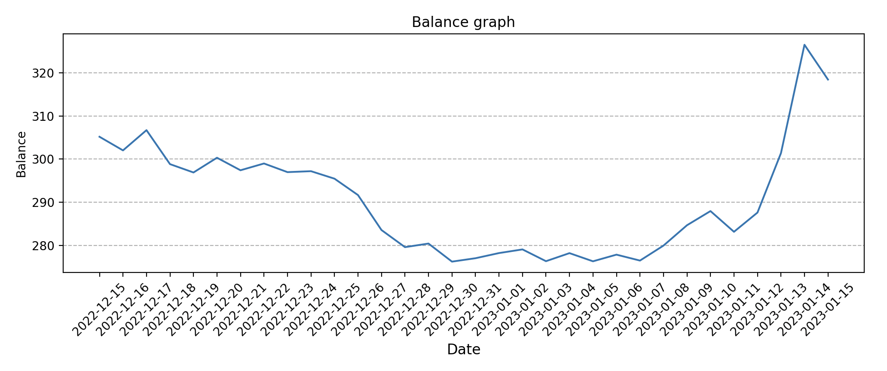
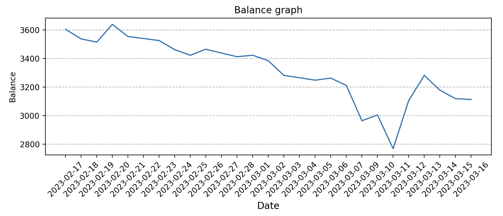

Of course, it’s not really a robot, just a simple script. However, it’s worth mentioning that it can indeed bring in profits.
After running for about 10 days, the profit is around 5%, which I think is already a good result. It’s much more reliable than trading manually since I only end up losing money when I trade manually.
If the principal is $100, then with a 5% profit rate, you can earn $15 a month, which at least covers the cost of running a server. Breaking even is a reason to be happy.
Looking at it from another perspective, 5% in 10 days, 15% in a month, 150% in a year… this profit rate is simply phenomenal. And this is just using spot trading; the profits would be much higher if leveraging.
After recent days of running and debugging, fixing some common errors, the program has become fairly stable.
https://www.bi123.co/ provides signals for various cryptocurrencies. At the top of the hour, it sends emails indicating whether a particular cryptocurrency is bullish or bearish. After long-term human observation, this signal is quite accurate, at least in terms of the overall trend.
So the script, upon receiving the email, automatically trades on Binance based on the signal. Binance provides a comprehensive API.
The script also pushes messages in real-time to a Telegram bot for easy monitoring and tracking of the trading results.
In a price fluctuation cycle, if you can buy at a low point and sell at a high point, each upward segment is profit. It doesn’t matter if the price ultimately goes higher; as long as there is fluctuation, there is profit.
The bi123 signals are sent at the top of the hour, which might seem untimely and could miss profit opportunities or result in larger losses. However, considering a period of at least one hour helps prevent unnecessary buying and selling due to minor fluctuations.
Since the prices of various cryptocurrencies do not rise and fall uniformly, the script supports configuring multiple cryptocurrencies, allowing for personal preference selection.
It’s not very technical, the code is here: smallyunet/txbot
More than a month has passed, so let’s summarize my actual usage and conclusions.
Firstly, due to many mistakes, my balance for the past month has been at a loss, around 3%. Initially, I didn’t notice that the signals are graded: 1-hour level, 4-hour level, and 1-day level. Different levels respond to the market at different speeds. The “Signal Trend” type of signal from bi123.co compares closing prices; for instance, if the current price is $1500 and it was $1300 four hours ago, it sends a bullish signal. It’s that simple and direct. Therefore, the strength of signals at different levels varies greatly. Generally, using the 1-hour signal is not recommended, and indeed, I experienced higher loss rates using it. Switching to the 4-hour signal improved results significantly. I recommend using the 4-hour signal.
Secondly, regarding signal types, bi123.co offers various signals such as “Signal Trend,” “RSI Divergence,” “MD5 Short-term,” and “Long-Short Arrangement.” Previously, I only used the “Signal Trend” type, which can lead to untimely market responses. I recommend using all types of signals together.
The trading bot script now supports configuration, using different signal strengths and types. The default configuration is what I find to be a good setup.
Looking at the bot’s performance, it cannot go against the market, meaning it’s hard to profit during a bear market since the bot only supports spot trading without short selling or leverage. This could be added later. The bot also incurs losses during short-term market fluctuations or sideways trends. From this perspective, the bot seems rather limited.
However, the bot is not completely useless. It can help you follow the market trends, selling in time when prices drop and buying in time when prices rise, preventing situations where you hold during a drop or miss a buy during a rise. All these operations are automated, so you don’t need to worry about your assets. The bot can help you not miss any market opportunities, cutting losses when the market drops and following gains when it rises.
Another use of the bot is supporting multi-currency configuration, allowing you to catch profit opportunities when a particular currency surges. It’s common for one currency to rise sharply while others don’t move much. Manual operations can easily miss such opportunities, but an automated bot can easily and naturally capture these opportunities.
In just two days, the market surged, and the bot’s performance met expectations. As the market rose, the bot automatically bought in, following the gains in time. Here’s the change in my assets over the past month under the bot’s control (the units of the vertical axis are not important):
After a period of practice, I still recommend using such a bot.
After trying out the bot for a while, I’ve decided to abandon and stop using it. I tracked 56 cryptocurrencies, receiving their signals and trading automatically based on these signals. Here’s the change in my assets over the past month:
Perhaps the number of tracked currencies was too many, resulting in too small an amount invested in each one. For whatever reason, due to the bot’s unsatisfactory performance and my current disapproval of cryptocurrency trading, I no longer recommend using such a bot.